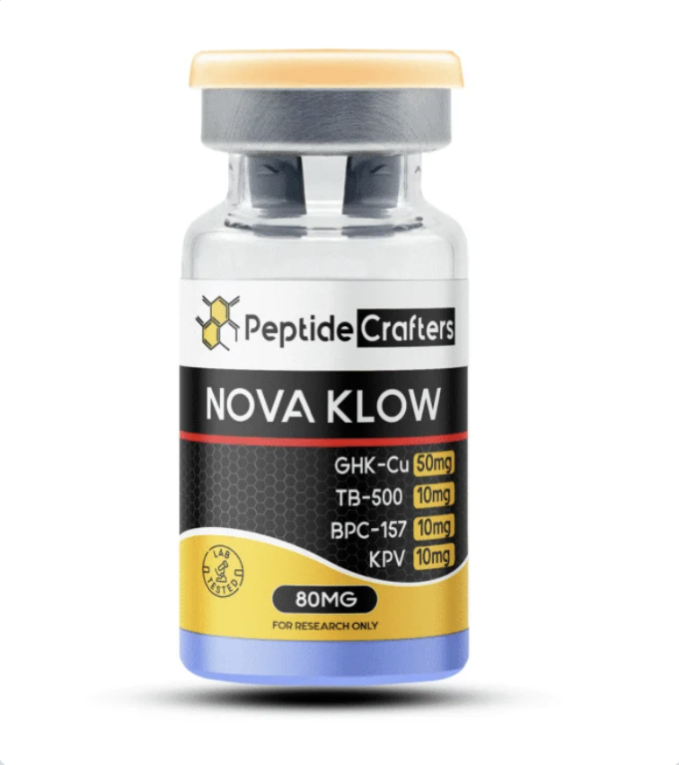

Crohn's Disease in 2026
Understanding the disease — and a restorative, total-health protocol.
Prepared for Yosef. Synthesized with Claude Opus 4.8 from current research, mechanistic pharmacology, and practitioner evidence as of mid-2026 — and written to reach past the patent-driven clinical canon, where unpatentable nutrients and repair compounds stay under-studied relative to their promise. Honest throughout about what's proven versus still experimental. Educational only; not medical advice, and no substitute for the team managing your care.
1The big idea: a spectrum, not a binary
Crohn's is the loud, concentrated end of a continuum that nearly everyone in the modern world sits somewhere on. Low-grade inflammation, a leaky gut barrier, microbiome depletion, bacterial overgrowth — these are widespread, usually quiet enough to ignore. Crohn's is what it looks like when the same feedback loop is turned all the way up and locks in.
When you were first diagnosed, the core problems — inflammation, gut-biome dysregulation, a permeable barrier — may have seemed like one-off features unique to the disease. Today they're understood as mass chronic patterns running, in quieter form, through the whole population.
That reframe dissolves the line between "treating disease" and "optimizing health." The levers that calm Crohn's — restoring the barrier, feeding the microbiome, lowering inflammatory and oxidative load, supporting repair — are the same levers that keep any gut resilient. You're not running a broken machine; you're running the same machine under heavier load, where the feedback is louder and the margin thinner. Which makes this less a sick-list than a high-resolution version of what serious modern health maintenance looks like for anyone.
2What Crohn's actually is
Not an infection. Not classic autoimmunity. A breakdown of immune tolerance toward your own gut bacteria, in a genetically susceptible host. The immune system, which normally ignores the trillions of commensal microbes in the gut, begins treating them as a threat. The result is a self-sustaining loop that runs full-thickness through the bowel wall:
- Barrier breach — the mucus layer thins and the tight junctions between gut-lining cells loosen, letting bacterial components cross into the wall.
- Innate misfire — immune cells sense those bacteria but, in a susceptible host, fail to clear them cleanly or signal "harmless."
- Adaptive overreaction — T cells attack the commensal bacteria, releasing inflammatory cytokines (TNF-α, IL-12/23, IL-17), orchestrated by the master switch NF-κB.
- Feed-forward lock-in — those cytokines, plus reactive oxygen species from activated immune cells, cause more barrier damage → more bacteria cross → more inflammation. The loop now sustains itself.
Why this matters — every intervention later targets a specific step of this loop. Hold the four steps in mind and the whole protocol organizes itself.
The two features that make Crohn's distinct: it's transmural (through every layer, not just the surface) and patchy (skip lesions). The transmural quality is what drives its signature complications over time — strictures, fistulas, abscesses.
3Genes load the gun; environment pulls the trigger
Crohn's is neither purely genetic nor purely environmental. Identical-twin concordance runs ~30–50% (vs ~3–4% in fraternal twins) — big enough to prove a strong genetic component, small enough to prove genes aren't destiny. Genetics explain roughly half of risk; environment and microbiome supply the rest.
And there's no single "Crohn's gene." Susceptibility is spread across 140+ loci that cluster around one job: sensing, clearing and tolerating gut bacteria (NOD2, ATG16L1, IRGM). Genetically, a susceptible person is simply worse at handling intestinal microbes. That's the loaded gun. The modern environment — overwhelmingly diet, via its effect on the microbiome and barrier — pulls the trigger.
4A global, dietary disease
If genes were the whole story, prevalence would track ancestry. Instead it tracks industrialization — the clearest evidence that environment does the heavy lifting. Crohn's emerged in the industrialized West, but the decisive observation is what happens as a society Westernizes its diet: incidence climbs, far too fast for the gene pool to have changed. Migration studies agree — people who move from low- to high-incidence regions, and especially their children, take on the new country's risk.
The gradient, roughly:
- United States — ~224 per 100,000 prevalence; ~21 new cases per 100,000/yr; ~1.5M living with IBD.
- Japan — prevalence climbed from ~34 → 55 per 100,000 (2010s); incidence ~5.5 per 100,000/yr and rising with a Westernizing diet.
- China — still rare (urban incidence ~0.5 → 0.71 per 100,000) but climbing year over year.
What in the modern diet does the damage: emulsifiers (polysorbate-80, carboxymethylcellulose) in ultra-processed food thin the protective mucus layer (attacking step 1); low fermentable fiber starves the bacteria that make butyrate, the colon's main fuel and a regulatory-immune signal; and the combination drives dysbiosis. Same exposures act on everyone — in most people they cause quiet permeability; in a susceptible person they can tip the loop into lock-in.
5Stress and the gut–brain axis
Stress isn't a vague aggravator — it has a concrete mechanism, which is why a stable course can worsen during a hard stretch. The brain and gut are wired together through the autonomic nervous system and the cortisol axis. Psychological stress measurably raises intestinal permeability (loosening the same tight junctions as step 1), shifts immune tone toward inflammation, and reshapes the microbiome. It's one of the best-documented flare triggers.
Why this matters — if your disease tracks your stress, that's real, not imagined. Which means stress regulation is a genuine lever, and nearly free. Modalities with actual gut-disease evidence: gut-directed hypnotherapy, mindfulness-based stress reduction, and CBT, on a base of sleep, movement, and deliberate parasympathetic ("vagal") practice.
6What standard treatment does — and the gap it leaves
Here's the bridge from understanding to protocol. Nearly every approved Crohn's therapy works one half of the problem.
The conventional ladder — nutritional therapy (EEN / the Crohn's Disease Exclusion Diet, which can induce remission); corticosteroids (induction only); immunomodulators / "chemo" agents (methotrexate, thiopurines); biologics (anti-TNF, anti-integrin, anti-IL-23); JAK inhibitors; and surgery for strictures or fistulas. These are the backbone, and they work.
Where "chemotherapy" fits. In Crohn's, "chemo" usually means immunosuppressants first developed for cancer — methotrexate, the thiopurines, or in severe disease cyclophosphamide. (Worth confirming the exact agent with the care team.) They act on step 3: broadly suppressing the activated immune cells driving the cytokine cascade. Powerful, but non-selective — they quiet the whole immune response, which is why they carry a real monitoring and infection-risk burden. And structurally, they suppress the fire without rebuilding what it burned. That's why disease is so often controlled but not healed, and why escalating immunosuppression alone can feel like a treadmill.
The pattern: conventional medicine is almost entirely subtractive — built to take the immune attack away. Almost nothing in it is additive — actively rebuilding the barrier and regenerating injured tissue. Healing is treated as something that should follow once inflammation is gone, not a process anything directly drives. That additive gap is the entire rationale for the protocol that follows.
Important — this protocol sits alongside conventional care, never replaces it. It's designed to work the half that immunosuppression structurally can't: lowering the inputs that provoke the immune system, quenching oxidative damage, and supplying repair signals. Anything added — especially alongside chemotherapy — should be cleared with the treating oncologist and gastroenterologist first.
7The protocol: how it's built
Four layers, highest-evidence first. Most of the achievable benefit — and nearly all the proven benefit — lives in Layer 1. Layers 2–3 add mechanistically distinct support that the foundations don't reach. Two disciplines make it work: keep the highest-evidence items central, and change one thing at a time so any response can be attributed.
- Layer 1 · Foundations — diet, stress, vitamin D, butyrate, micronutrients. Well-established.
- Layer 2 · Antioxidant arm — NAC + liposomal glutathione. Promising.
- Layer 3 · Repair / peptides — the KLOW blend (one injectable). Investigational.
- Monitoring — calprotectin, CRP, 25(OH)D, a symptom journal. Essential.
8Layer 1 — Foundations
Diet is the largest lever, acting upstream on barrier and microbiome. Reduce ultra-processed foods and emulsifiers; raise fermentable/soluble fiber to feed butyrate producers — except in stricturing disease, where bulky insoluble fiber is a mechanical hazard and the advice inverts. Structured options (CDED, partial enteral nutrition) carry remission-induction evidence if a reset is needed.
Stress regulation — treated as a foundation, not an afterthought (see §5). Gut-directed hypnotherapy, MBSR, CBT, sleep, movement. Low/no cost, high leverage.
Vitamin D — test, then correct. The highest-evidence supplement here and commonly deficient (~58% of patients). Randomized data show relapse reduction in Crohn's specifically. Dose to the measured 25(OH)D level — malabsorption can require 2,000–10,000 IU/day. Pair with K2.
Butyrate — the most on-target single compound: colonocyte fuel and a regulatory-immune signal, exactly what a low-fiber diet strips out. Best fed via fermentable fiber; can also be supplemented directly.
Micronutrients — check and replace the recurring small-bowel deficiencies: B12, iron, folate, zinc, magnesium. Cheap, and each affects energy and repair independent of disease activity. Worth a SIBO assessment too.
9Layer 2 — Antioxidants (NAC & glutathione)
This targets the reactive-oxygen-species arm of step 4 — a node nothing in Layer 1 addresses head-on. Glutathione is the gut's master antioxidant, and it's specifically depleted in Crohn's tissue (the defect is partly one of synthesis, not just consumption). The honest evidence position: the depletion is well-documented; supplementation benefit is proven only at the precursor level (NAC) and so far only in ulcerative colitis. Strong rationale, low downside, worth trialing.
- NAC — the glutathione precursor. A small, stable molecule that absorbs well as a plain capsule and gets converted to glutathione inside cells. No liposomal needed. ~600 mg once or twice daily.
- Liposomal glutathione — supplies finished glutathione while bypassing the gut enzymes that destroy ordinary oral glutathione. ~250–500 mg/day. Pair with a little vitamin C.
Note — why glutathione is oral here, not injected. Glutathione can't share the KLOW syringe (it would strip the copper out of one of the peptides), and injecting it separately would just mean a second daily shot. Liposomal oral glutathione sidesteps the whole issue and suits a gut target, so the protocol keeps it oral.
10Layer 3 — The repair peptides (KLOW)
This is the experimental layer — mechanistically coherent, supported mostly by preclinical and community evidence, with minimal controlled human data in Crohn's. It's also the answer to a real gap: three of these four peptides target active tissue repair, which conventional drugs don't directly drive.
One product, four peptides. They're not mixed by hand — they come pre-combined in a single vial sold as a "KLOW" stack (an 80 mg blend: GHK-Cu 50 mg, TB-500 10 mg, BPC-157 10 mg, KPV 10 mg), reconstituted once with bacteriostatic water and drawn as one daily injection.

A peptide is a short chain of amino acids — a signaling molecule that carries instructions to cells (grow a vessel here, migrate to close this wound, calm this pathway), rather than suppressing the immune system the way the drugs do. The body makes these naturally; the protocol supplies more repair signal where the disease has overwhelmed it.
The four, individually
- BPC-157 — the gut peptide. Derived from a protein in gastric juice. Drives repair: stimulates new blood vessels (VEGF), blood flow, and fibroblast/collagen wound-closure; in animal models it heals intestinal lesions and fistulas. The closest thing to a direct mucosal-repair agent — and not something conventional drugs do.
- TB-500 — the cell-migration peptide. A thymosin β-4 fragment that mobilizes cells to migrate in and reline damaged tissue; complements BPC-157. Also a repair function conventional care leaves to chance.
- GHK-Cu — the remodeling peptide. A copper tripeptide that drives connective-tissue remodeling and induces the body's antioxidant enzymes. Partly overlaps the antioxidant arm; one caveat — in stricturing disease, a collagen-stimulating peptide deserves extra thought.
- KPV — the anti-inflammatory (the honest exception). An α-MSH fragment that inhibits NF-κB and concentrates in inflamed tissue via the PepT1 transporter. This overlaps what the drugs already do — same node, gentler delivery, not a new mechanism.
Does it target something otherwise untreated?
| Peptide | What it does for Crohn's | Loop node | Covered by standard Rx? |
|---|---|---|---|
| BPC-157 | Active mucosal/barrier repair, new blood supply | Barrier + repair (1,4) | Gap — not treated |
| TB-500 | Mobilizes cells to reline damaged bowel | Tissue repair (4) | Gap — not treated |
| GHK-Cu | Tissue remodeling + antioxidant induction | Remodeling + ROS | Partial overlap |
| KPV | Local, targeted anti-inflammation | Cytokine cascade (3) | Overlaps drugs |
The strategic case rests on the top two rows.
Dosing principles. These signaling peptides have a flat dose-response — frequency and consistency matter more than larger doses, so titrate the daily draw up slowly and conservatively. Injection is the right route here (no oral workaround exists, unlike glutathione). Insist on third-party Certificate-of-Analysis purity and strict sterile technique — doubly important alongside immunosuppression.
11Daily rhythm & monitoring
Day to day, the stack is simple: the foundational pills and the antioxidants daily (vitamin D with a fat-containing meal), the KLOW injection daily in its own syringe and site, sleep and a short stress practice daily, and a weekly mind-body session (hypnotherapy / MBSR / CBT) or movement block. The exact timing and doses are for Yosef and his clinician to set.
The discipline that makes it legible: change one thing at a time so any reaction is attributable, and keep a short symptom journal. Track progress with periodic labs — calprotectin, CRP, and 25(OH)D — as ordered by the care team.
12The protocol at a glance
One master table for everything taken — when, how much, what it costs, where to get it, and why. (Per item; the four-layer logic from §7 still applies.) Prices are US ballparks (mid-2026) and drift; product links are representative, not endorsements.
| Item | When / dose | ~Monthly | Recommended (& alt) | Notes |
|---|---|---|---|---|
| Vitamin D3 + K2 | Daily, to lab level | $6–12 | Thorne D + K2 Liquid · alt: Sports Research / Pure Encaps | Liquid lets you titrate to 25(OH)D; with a fat meal; K2 as MK-7 |
| NAC | 600 mg, 1–2×/day | $10–25 | Nutricost NAC 600 mg · alt: Thorne NAC | Plain capsule — no liposomal needed; empty stomach; faint sulfur smell is normal · clear with oncologist |
| Liposomal glutathione | 250–500 mg/day | $30–60 | Codeage Setria 500 mg · alt: Pure Encaps Liposomal | Look for "Setria" + liposomal; pair with a little vitamin C · clear with oncologist |
| Butyrate | 300–600 mg/day | $20–35 | Tributyrin — DFH / Tesseract · alt: BodyBio Sodium / Cal-Mag | Tributyrin releases in the colon and is odorless — best for a gut target; start low |
| Micronutrients | As indicated | $15–30 | B12, iron, folate, zinc, magnesium | Replace measured small-bowel deficiencies; consider a SIBO check |
| Fiber | Food-first, daily | — (food) | PHGG / Sunfiber if supplementing | Soluble/fermentable to feed butyrate producers; easy on bulky insoluble fiber if stricturing |
| Stress / mind-body | Daily + weekly | $0–30 | Hypnotherapy / MBSR / CBT, sleep | Mostly free; high leverage |
| KLOW blend (injectable) | 1 inj./day, 5–7×/wk | $95–135 | COA-verified peptide source (see §10) | One 80 mg vial ≈ 1 month; own syringe/site; insist on third-party COA · clear with oncologist |
| Injection supplies | Ongoing | $15–25 | Bacteriostatic water, insulin syringes, swabs | — |
| Core total | — | ~$190–350 | — | Per month; foundations carry most of the evidence at the lowest cost |
Note — before ordering. Given the chemotherapy: NAC, glutathione, and KLOW are the items to clear with the oncologist first (high-dose antioxidants during chemo are debated; injectables raise infection considerations under immunosuppression), and vitamin D should be dosed from an actual 25(OH)D blood level, not estimated.
The bigger picture
Strip the diagnosis away and what remains is, almost line for line, a protocol that recovery-focused athletes and longevity practitioners pay for — because these compounds do desirable things in anyone. Better skin and hair (GHK-Cu is a mainstay of skincare and hair-restoration; it's part of why I run KLOW), faster tendon/joint/muscle recovery (BPC-157, TB-500), broad antioxidant and metabolic support (NAC, glutathione, vitamin D, butyrate). The Crohn's case sharpens the why; it doesn't narrow the benefit.
This isn't the maintenance of a defective machine. It's barrier support, microbiome care, lower inflammatory and oxidative load, calmer gut–brain signaling, and enhanced repair — the same architecture the most deliberate people pursue with no diagnosis at all. Crohn's just makes the work non-optional and its effects visible. It's a journey worth being on regardless — and one we can go through together.
Important & sources
This is an educational synthesis, not medical advice, and Claude is not a physician. Crohn's is serious and individual; the conventional therapies a gastroenterologist prescribes are the backbone, and everything here is adjunctive to — and coordinated with — that care, never a replacement. The investigational peptides are not approved Crohn's treatments and carry unknowns in purity, dosing and long-term safety, amplified under immunosuppression. Share the full list, injectables included, with the treating oncologist and gastroenterologist before starting.
Selected sources: twin-concordance and GWAS literature on Crohn's heritability (NOD2/ATG16L1/IRGM); Kaplan & Windsor, four epidemiological stages of the global IBD pandemic; Japan–US comparative incidence/prevalence data; Jørgensen et al., vitamin D3 relapse-prevention RCT in Crohn's; NAC remission-maintenance RCT in ulcerative colitis; glutathione-depletion and impaired-synthesis studies in IBD (Nutrition Research 1997; Gut 1998); Inorg Chem 2021 on glutathione reducing Cu(II)GHK; preclinical BPC-157, TB-500, KPV and GHK-Cu tissue-repair literature; EEN/CDED remission-induction trials. Figures are approximate as of June 2026.